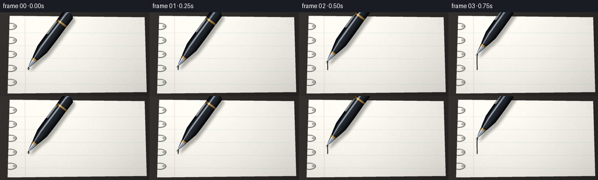
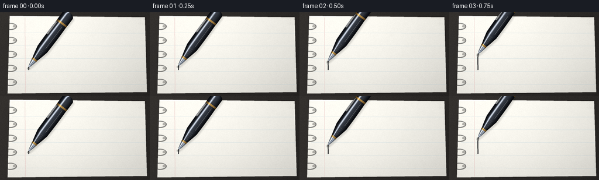
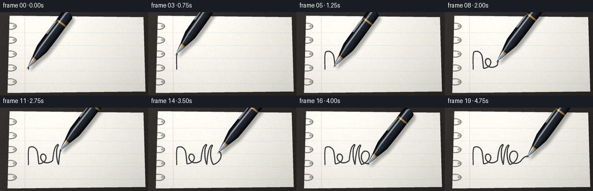

CODING AGENTS AS PIXEL WORLD MODELS
traex/DeepSeek-V4.1-Flash · phygen_035
点击播放 · 原生 RGB 像素
逐轮保存的候选
回放视频、检查图与代码变化。
每份候选均可单独播放。实际图片检查记录在下方工具轨迹中。
候选 01播放与检查图
点击播放 · 原生 RGB 像素


展开代码变化
--- 上一保存版本
+++ 本次保存版本
@@ -0,0 +1,569 @@
+from __future__ import annotations
+
+import math
+from pathlib import Path
+
+import numpy as np
+from PIL import Image, ImageDraw, ImageFilter
+
+import artifact_io
+
+
+WIDTH = 256
+HEIGHT = 144
+FRAMES = 20
+FPS = 4.0
+SS = 4
+CW = WIDTH * SS
+CH = HEIGHT * SS
+
+
+def P(x: float, y: float) -> tuple[int, int]:
+ return int(round(x * SS)), int(round(y * SS))
+
+
+def polygon(points: list[tuple[float, float]]) -> list[tuple[int, int]]:
+ return [P(x, y) for x, y in points]
+
+
+def make_desk() -> np.ndarray:
+ yy, xx = np.mgrid[0:CH, 0:CW].astype(np.float32)
+ xn = xx / max(CW - 1, 1)
+ yn = yy / max(CH - 1, 1)
+
+ rng = np.random.default_rng(35)
+ fine = rng.normal(0.0, 1.0, (CH, CW)).astype(np.float32)
+ fine = np.asarray(
+ Image.fromarray(((fine * 28.0) + 128.0).clip(0, 255).astype(np.uint8)).filter(
+ ImageFilter.GaussianBlur(1.6 * SS)
+ ),
+ dtype=np.float32,
+ )
+ fine = (fine - 128.0) * 0.10
+
+ low = rng.normal(0.0, 1.0, (HEIGHT // 2, WIDTH // 2)).astype(np.float32)
+ low_img = Image.fromarray(((low * 30.0) + 128.0).clip(0, 255).astype(np.uint8))
+ low_img = low_img.resize((CW, CH), Image.Resampling.BICUBIC).filter(
+ ImageFilter.GaussianBlur(6.0 * SS)
+ )
+ low = (np.asarray(low_img, dtype=np.float32) - 128.0) * 0.07
+
+ light = 37.0 + 11.0 * (1.0 - xn) + 4.0 * (1.0 - yn)
+ light += fine + low
+ rgb = np.empty((CH, CW, 3), dtype=np.float32)
+ rgb[..., 0] = light * 1.02
+ rgb[..., 1] = light * 0.96
+ rgb[..., 2] = light * 0.91
+ return rgb
+
+
+def make_paper(mask: np.ndarray) -> np.ndarray:
+ yy, xx = np.mgrid[0:CH, 0:CW].astype(np.float32)
+ xn = xx / max(CW - 1, 1)
+ yn = yy / max(CH - 1, 1)
+
+ rng = np.random.default_rng(350)
+ fine = rng.normal(0.0, 1.0, (CH, CW)).astype(np.float32)
+ fine = np.asarray(
+ Image.fromarray(((fine * 24.0) + 128.0).clip(0, 255).astype(np.uint8)).filter(
+ ImageFilter.GaussianBlur(0.55 * SS)
+ ),
+ dtype=np.float32,
+ )
+ fine = (fine - 128.0) * 0.16
+
+ low = rng.normal(0.0, 1.0, (HEIGHT, WIDTH)).astype(np.float32)
+ low_img = Image.fromarray(((low * 35.0) + 128.0).clip(0, 255).astype(np.uint8))
+ low_img = low_img.resize((CW, CH), Image.Resampling.BICUBIC).filter(
+ ImageFilter.GaussianBlur(3.0 * SS)
+ )
+ low = (np.asarray(low_img, dtype=np.float32) - 128.0) * 0.10
+
+ # Soft, broad daylight falling from the upper-left.
+ illumination = 1.025 - 0.13 * (xn - 0.24) ** 2 - 0.09 * (yn - 0.12) ** 2
+ illumination -= 0.035 * yn
+ illumination += 0.014 * np.sin(xn * math.pi * 1.4 + 0.3)
+
+ rgb = np.empty((CH, CW, 3), dtype=np.float32)
+ rgb[..., 0] = 248.0 * illumination + fine + low
+ rgb[..., 1] = 246.0 * illumination + fine * 0.95 + low
+ rgb[..., 2] = 238.0 * illumination + fine * 0.84 + low
+
+ # Very light paper fibers.
+ fiber_rng = np.random.default_rng(351)
+ fiber_layer = Image.new("RGBA", (CW, CH), (0, 0, 0, 0))
+ fiber_draw = ImageDraw.Draw(fiber_layer)
+ for _ in range(230):
+ x = fiber_rng.uniform(20, 251) * SS
+ y = fiber_rng.uniform(9, 138) * SS
+ length = fiber_rng.uniform(0.6, 3.8) * SS
+ angle = fiber_rng.uniform(-0.12, 0.12)
+ value = int(fiber_rng.uniform(150, 220))
+ alpha = int(fiber_rng.uniform(6, 16))
+ fiber_draw.line(
+ (x, y, x + math.cos(angle) * length, y + math.sin(angle) * length),
+ fill=(value, value, value - 4, alpha),
+ width=1,
+ )
+ fibers = np.asarray(fiber_layer, dtype=np.float32)
+ fiber_alpha = (fibers[..., 3:4] / 255.0) * mask[..., None]
+ rgb = rgb * (1.0 - fiber_alpha) + fibers[..., :3] * fiber_alpha
+ return rgb
+
+
+def blend_rgba(base: np.ndarray, overlay: Image.Image, mask: np.ndarray | None = None) -> np.ndarray:
+ rgba = np.asarray(overlay, dtype=np.float32)
+ alpha = rgba[..., 3:4] / 255.0
+ if mask is not None:
+ alpha *= mask[..., None]
+ return base * (1.0 - alpha) + rgba[..., :3] * alpha
+
+
+def make_page() -> np.ndarray:
+ desk = make_desk()
+
+ page_points = [(16.5, 6.0), (247.5, 8.5), (251.0, 137.0), (13.0, 139.5)]
+ page_mask_img = Image.new("L", (CW, CH), 0)
+ ImageDraw.Draw(page_mask_img).polygon(polygon(page_points), fill=255)
+ page_mask_img = page_mask_img.filter(ImageFilter.GaussianBlur(0.20 * SS))
+ page_mask = np.asarray(page_mask_img, dtype=np.float32) / 255.0
+
+ # Contact shadow and a slight page lift at the lower edge.
+ shadow_mask = Image.new("L", (CW, CH), 0)
+ ImageDraw.Draw(shadow_mask).polygon(
+ polygon([(17.0, 9.0), (249.0, 11.0), (254.0, 140.0), (17.0, 142.5)]),
+ fill=180,
+ )
+ shadow_mask = shadow_mask.filter(ImageFilter.GaussianBlur(4.2 * SS))
+ shadow = np.asarray(shadow_mask, dtype=np.float32)[..., None] / 255.0
+ shadow = shadow * np.array([0.16, 0.15, 0.14], dtype=np.float32)
+ desk = desk * (1.0 - shadow * 0.62)
+
+ paper = make_paper(page_mask)
+ canvas = desk * (1.0 - page_mask[..., None]) + paper * page_mask[..., None]
+
+ page_overlay = Image.new("RGBA", (CW, CH), (0, 0, 0, 0))
+ draw = ImageDraw.Draw(page_overlay)
+
+ # Faint ruled lines, deliberately low contrast so the paper stays smooth.
+ for index, y in enumerate((35.0, 57.0, 79.0, 101.0, 123.0)):
+ slope = 0.0035
+ draw.line(
+ (
+ *P(20.0, y),
+ *P(251.0, y + slope * (251.0 - 20.0)),
+ ),
+ fill=(154, 190, 211, 56 if index % 2 else 64),
+ width=max(1, SS),
+ )
+ draw.line((*P(42.5, 9.0), *P(43.0, 138.0)), fill=(213, 146, 148, 72), width=max(1, SS))
+
+ # Binding holes and small metal coils along the left edge.
+ for y in (24.0, 48.0, 72.0, 96.0, 120.0):
+ draw.ellipse(
+ (*P(21.8, y - 2.2), *P(27.6, y + 2.2)),
+ fill=(70, 69, 66, 95),
+ outline=(107, 104, 98, 100),
+ width=max(1, SS // 2),
+ )
+ draw.ellipse(
+ (*P(22.4, y - 1.6), *P(25.3, y + 0.5)),
+ fill=(33, 33, 32, 90),
+ )
+
+ # Shadow of the metal loop.
+ draw.arc(
+ (*P(7.0, y - 5.5), *P(29.0, y + 6.5)),
+ start=198,
+ end=505,
+ fill=(26, 25, 23, 80),
+ width=max(2, int(1.8 * SS)),
+ )
+ draw.arc(
+ (*P(6.0, y - 6.0), *P(28.5, y + 6.0)),
+ start=204,
+ end=506,
+ fill=(91, 91, 89, 220),
+ width=max(2, int(1.45 * SS)),
+ )
+ draw.arc(
+ (*P(6.5, y - 6.1), *P(27.8, y + 5.2)),
+ start=218,
+ end=338,
+ fill=(196, 197, 194, 170),
+ width=max(1, int(0.55 * SS)),
+ )
+
+ # Tiny corner wear keeps the notebook from looking mathematically clean.
+ wear = Image.new("RGBA", (CW, CH), (0, 0, 0, 0))
+ wear_draw = ImageDraw.Draw(wear)
+ wear_rng = np.random.default_rng(352)
+ for _ in range(20):
+ x = wear_rng.uniform(236.0, 250.0)
+ y = wear_rng.uniform(10.0, 23.0)
+ r = wear_rng.uniform(0.2, 0.7)
+ wear_draw.ellipse(
+ (*P(x - r, y - r), *P(x + r, y + r)),
+ fill=(164, 156, 145, int(wear_rng.uniform(10, 25))),
+ )
+ wear = wear.filter(ImageFilter.GaussianBlur(0.35 * SS))
+ page_overlay = Image.alpha_composite(page_overlay, wear)
+ canvas = blend_rgba(canvas, page_overlay, page_mask)
+ return np.clip(canvas, 0, 255).astype(np.uint8)
+
+
+def cubic_points(
+ p0: tuple[float, float],
+ p1: tuple[float, float],
+ p2: tuple[float, float],
+ p3: tuple[float, float],
+ samples: int = 48,
+) -> list[tuple[float, float]]:
+ points = []
+ for index in range(samples):
+ t = index / samples
+ mt = 1.0 - t
+ x = (
+ mt**3 * p0[0]
+ + 3.0 * mt**2 * t * p1[0]
+ + 3.0 * mt * t**2 * p2[0]
+ + t**3 * p3[0]
+ )
+ y = (
+ mt**3 * p0[1]
+ + 3.0 * mt**2 * t * p1[1]
+ + 3.0 * mt * t**2 * p2[1]
+ + t**3 * p3[1]
+ )
+ points.append((x, y))
+ return points
+
+
+def make_writing_path() -> tuple[list[tuple[float, float]], np.ndarray]:
+ segments = [
+ ((49.0, 99.0), (49.0, 87.0), (48.0, 75.0), (50.0, 69.0)),
+ ((50.0, 69.0), (54.0, 66.0), (61.0, 67.0), (64.0, 75.0)),
+ ((64.0, 75.0), (66.0, 84.0), (66.0, 93.0), (67.0, 97.0)),
+ ((67.0, 97.0), (77.0, 96.0), (82.0, 88.0), (78.0, 82.0)),
+ ((78.0, 82.0), (73.0, 77.0), (67.0, 83.0), (72.0, 91.0)),
+ ((72.0, 91.0), (77.0, 97.0), (86.0, 96.0), (91.0, 91.0)),
+ ((91.0, 91.0), (92.0, 79.0), (94.0, 68.0), (98.0, 65.0)),
+ ((98.0, 65.0), (100.0, 62.0), (102.0, 64.0), (99.0, 68.0)),
+ ((99.0, 68.0), (96.0, 78.0), (98.0, 91.0), (101.0, 98.0)),
+ ((101.0, 98.0), (102.0, 84.0), (104.0, 70.0), (108.0, 66.0)),
+ ((108.0, 66.0), (110.0, 63.0), (112.0, 65.0), (109.0, 69.0)),
+ ((109.0, 69.0), (106.0, 80.0), (108.0, 91.0), (112.0, 98.0)),
+ ((112.0, 98.0), (122.0, 96.0), (129.0, 84.0), (124.0, 77.0)),
+ ((124.0, 77.0), (117.0, 71.0), (109.0, 79.0), (113.0, 91.0)),
+ ((113.0, 91.0), (116.0, 98.0), (126.0, 98.0), (132.0, 91.0)),
+ ((132.0, 91.0), (137.0, 84.0), (143.0, 82.0), (151.0, 84.0)),
+ ]
+
+ points: list[tuple[float, float]] = []
+ for segment in segments:
+ piece = cubic_points(*segment)
+ if points:
+ piece = piece[1:]
+ points.extend(piece)
+ points.append(segments[-1][-1])
+
+ distances = [0.0]
+ for first, second in zip(points[:-1], points[1:]):
+ distances.append(distances[-1] + math.hypot(second[0] - first[0], second[1] - first[1]))
+ cumulative = np.asarray(distances, dtype=np.float32)
+ cumulative /= cumulative[-1]
+ return points, cumulative
+
+
+def point_at_fraction(
+ points: list[tuple[float, float]], cumulative: np.ndarray, fraction: float
+) -> tuple[float, float]:
+ fraction = float(np.clip(fraction, 0.0, 1.0))
+ index = int(np.searchsorted(cumulative, fraction, side="right") - 1)
+ index = max(0, min(index, len(points) - 2))
+ lo = float(cumulative[index])
+ hi = float(cumulative[index + 1])
+ local = 0.0 if hi <= lo else (fraction - lo) / (hi - lo)
+ x = points[index][0] * (1.0 - local) + points[index + 1][0] * local
+ y = points[index][1] * (1.0 - local) + points[index + 1][1] * local
+ return x, y
+
+
+def ink_overlay(
+ points: list[tuple[float, float]], cumulative: np.ndarray, fraction: float
+) -> Image.Image:
+ layer = Image.new("RGBA", (CW, CH), (0, 0, 0, 0))
+ if fraction <= 0.0001:
+ return layer
+
+ target = float(fraction)
+ draw = ImageDraw.Draw(layer)
+ for index in range(len(points) - 1):
+ start_fraction = float(cumulative[index])
+ if start_fraction >= target:
+ break
+ end_fraction = min(float(cumulative[index + 1]), target)
+ if end_fraction <= start_fraction:
+ continue
+ p0 = points[index]
+ if cumulative[index + 1] <= target:
+ p1 = points[index + 1]
+ else:
+ p1 = point_at_fraction(points, cumulative, target)
+
+ # Ink is slightly heavier at the beginning of a downstroke.
+ dy = p1[1] - p0[1]
+ base_width = 1.68 + max(-0.24, min(0.24, dy * 0.11))
+ taper = 0.90 + 0.10 * math.sin(min(1.0, start_fraction * 2.4) * math.pi * 0.5)
+ width = base_width * taper
+
+ draw.line(
+ (*P(*p0), *P(*p1)),
+ fill=(20, 22, 25, 205),
+ width=max(2, int(round(width * SS))),
+ )
+ draw.ellipse(
+ (*P(p1[0] - width / 2.0, p1[1] - width / 2.0),
+ *P(p1[0] + width / 2.0, p1[1] + width / 2.0)),
+ fill=(20, 22, 25, 205),
+ )
+
+ # A tiny paper bleed makes the line feel absorbed rather than vector-drawn.
+ bleed = layer.filter(ImageFilter.GaussianBlur(0.35 * SS))
+ alpha = bleed.getchannel("A").point(lambda value: int(value * 0.13))
+ bleed.putalpha(alpha)
+ return Image.alpha_composite(bleed, layer)
+
+
+def pen_local_image() -> Image.Image:
+ local_w = 127.0
+ local_h = 38.0
+ px_w = int(local_w * SS)
+ px_h = int(local_h * SS)
+ cy = local_h * 0.50
+
+ yy, xx = np.mgrid[0:px_h, 0:px_w].astype(np.float32)
+ xd = xx / SS
+ yd = yy / SS
+
+ half_width = np.zeros_like(xd, dtype=np.float32)
+ material = np.zeros_like(xd, dtype=np.int8)
+
+ def assign(lo: float, hi: float, width_fn, mat: int) -> None:
+ sel = (xd >= lo) & (xd < hi)
+ half_width[sel] = width_fn(xd[sel])
+ material[sel] = mat
+
+ assign(4.0, 6.0, lambda x: 0.45 + 0.65 * (x - 4.0) / 2.0, 1)
+ assign(6.0, 20.0, lambda x: 1.1 + 3.55 * ((x - 6.0) / 14.0) ** 0.80, 1)
+ assign(20.0, 23.2, lambda x: 4.85 + 0.20 * (x - 20.0) / 3.2, 2)
+ assign(23.2, 44.0, lambda x: 5.05 + 5.05 * ((x - 23.2) / 20.8) ** 0.90, 0)
+ assign(44.0, 98.0, lambda x: 10.10 + 0.38 * np.sin((x - 44.0) / 54.0 * math.pi), 0)
+ assign(98.0, 101.2, lambda x: 10.35, 2)
+ assign(101.2, 116.0, lambda x: 10.45, 0)
+ tail = (xd >= 116.0) & (xd < 122.0)
+ half_width[tail] = 10.45 * np.sqrt(np.clip(1.0 - ((xd[tail] - 116.0) / 6.0) ** 2, 0.0, 1.0))
+ material[tail] = 0
+
+ dy = yd - cy
+ edge = np.clip((half_width - np.abs(dy)) * SS + 0.55, 0.0, 1.0)
+ alpha = (edge * 255.0).astype(np.uint8)
+
+ norm = np.divide(dy, np.maximum(half_width, 0.001))
+ top_highlight = np.exp(-((norm + 0.38) / 0.14) ** 2)
+ soft_sheen = np.exp(-((norm + 0.04) / 0.62) ** 2)
+ edge_dark = np.clip((np.abs(norm) - 0.55) / 0.45, 0.0, 1.0)
+
+ rgb = np.zeros((px_h, px_w, 3), dtype=np.float32)
+ black_sel = material == 0
+ silver_sel = material == 1
+ gold_sel = material == 2
+
+ for channel, base, soft, spec in (
+ (0, 12.0, 23.0, 126.0),
+ (1, 14.0, 26.0, 132.0),
+ (2, 17.0, 30.0, 140.0),
+ ):
+ value = base + soft * soft_sheen + spec * top_highlight - 10.0 * edge_dark
+ rgb[..., channel][black_sel] = value[black_sel]
+
+ for channel, base, soft, spec, low in (
+ (0, 108.0, 61.0, 118.0, 52.0),
+ (1, 119.0, 62.0, 112.0, 58.0),
+ (2, 136.0, 62.0, 101.0, 70.0),
+ ):
+ value = base + soft * soft_sheen + spec * top_highlight - low * edge_dark
+ rgb[..., channel][silver_sel] = value[silver_sel]
+
+ for channel, base, soft, spec, low in (
+ (0, 111.0, 61.0, 126.0, 45.0),
+ (1, 79.0, 55.0, 111.0, 32.0),
+ (2, 35.0, 34.0, 88.0, 18.0),
+ ):
+ value = base + soft * soft_sheen + spec * top_highlight - low * edge_dark
+ rgb[..., channel][gold_sel] = value[gold_sel]
+
+ rgba = np.dstack(
+ (
+ np.clip(rgb[..., 0], 0, 255),
+ np.clip(rgb[..., 1], 0, 255),
+ np.clip(rgb[..., 2], 0, 255),
+ alpha.astype(np.float32),
+ )
+ ).astype(np.uint8)
+ layer = Image.fromarray(rgba, "RGBA")
+ draw = ImageDraw.Draw(layer)
+
+ # Fountain-pen slit and breather hole.
+ draw.line((*P(7.4, cy), *P(18.7, cy)), fill=(49, 53, 59, 225), width=max(1, SS // 2))
+ draw.ellipse(
+ (*P(16.8, cy - 0.52), *P(17.9, cy + 0.58)),
+ fill=(36, 39, 44, 235),
+ outline=(211, 218, 224, 125),
+ width=max(1, SS // 3),
+ )
+
+ # Grip grooves.
+ for x in (28.0, 31.2, 34.4, 37.6, 40.8):
+ draw.line(
+ (*P(x, cy - 3.9), *P(x + 0.25, cy + 3.9)),
+ fill=(4, 5, 6, 150),
+ width=max(1, int(0.48 * SS)),
+ )
+
+ # A slim polished clip on the upper side of the barrel.
+ clip = [
+ (69.0, cy - 10.15),
+ (95.0, cy - 10.05),
+ (98.5, cy - 8.8),
+ (96.8, cy - 7.45),
+ (72.0, cy - 7.45),
+ (69.5, cy - 8.35),
+ ]
+ draw.polygon(polygon(clip), fill=(119, 122, 124, 235), outline=(31, 32, 34, 235))
+ draw.line(
+ (*P(71.8, cy - 9.62), *P(95.0, cy - 9.54)),
+ fill=(222, 225, 226, 155),
+ width=max(1, int(0.45 * SS)),
+ )
+ draw.line(
+ (*P(72.2, cy - 7.95), *P(96.0, cy - 7.92)),
+ fill=(45, 46, 47, 180),
+ width=max(1, SS // 2),
+ )
+
+ # Sharp lacquer highlights break into the rounded body naturally.
+ draw.line(
+ (*P(46.0, cy - 3.55), *P(95.7, cy - 3.48)),
+ fill=(164, 171, 179, 72),
+ width=max(1, int(0.30 * SS)),
+ )
+ draw.line(
+ (*P(104.5, cy - 3.50), *P(112.5, cy - 3.48)),
+ fill=(140, 147, 154, 62),
+ width=max(1, int(0.28 * SS)),
+ )
+
+ # Ink at the contact point.
+ draw.ellipse(
+ (*P(3.8, cy - 0.55), *P(5.4, cy + 0.70)),
+ fill=(12, 14, 17, 245),
+ )
+ return layer
+
+
+PEN_LOCAL = pen_local_image()
+
+
+def place_pen(tip_x: float, tip_y: float, angle_deg: float) -> Image.Image:
+ rotated = PEN_LOCAL.rotate(
+ angle_deg,
+ resample=Image.Resampling.BICUBIC,
+ expand=True,
+ )
+ local_tip = np.array([5.0 * SS, 19.0 * SS], dtype=np.float32)
+ local_center = np.array([PEN_LOCAL.width / 2.0, PEN_LOCAL.height / 2.0], dtype=np.float32)
+ new_center = np.array([rotated.width / 2.0, rotated.height / 2.0], dtype=np.float32)
+ vector = local_tip - local_center
+ angle = math.radians(angle_deg)
+ rotated_vector = np.array(
+ [
+ vector[0] * math.cos(angle) + vector[1] * math.sin(angle),
+ -vector[0] * math.sin(angle) + vector[1] * math.cos(angle),
+ ],
+ dtype=np.float32,
+ )
+ transformed_tip = new_center + rotated_vector
+ desired_tip = np.array([tip_x * SS, tip_y * SS], dtype=np.float32)
+ paste = tuple(np.round(desired_tip - transformed_tip).astype(int))
+
+ canvas = Image.new("RGBA", (CW, CH), (0, 0, 0, 0))
+ canvas.alpha_composite(rotated, dest=(paste[0], paste[1]))
+ return canvas
+
+
+def shadow_from_pen(pen: Image.Image, offset_x: float, offset_y: float) -> Image.Image:
+ alpha = pen.getchannel("A").filter(ImageFilter.GaussianBlur(2.0 * SS))
+ alpha = alpha.point(lambda value: int(value * 0.33))
+ shadow = Image.new("RGBA", (CW, CH), (19, 18, 16, 0))
+ shadow.putalpha(alpha)
+ shifted = Image.new("RGBA", (CW, CH), (0, 0, 0, 0))
+ shifted.alpha_composite(shadow, dest=(int(offset_x * SS), int(offset_y * SS)))
+ return shifted
+
+
+def render_frame(base: np.ndarray, frame_index: int) -> np.ndarray:
+ points, cumulative = PATH
+ t = frame_index / (FRAMES - 1)
+ eased = t * t * (3.0 - 2.0 * t)
+ writing_fraction = 0.012 + 0.968 * eased
+ tip_x, tip_y = point_at_fraction(points, cumulative, writing_fraction)
+
+ canvas = base.copy()
+
+ ink = ink_overlay(points, cumulative, writing_fraction)
+ canvas = blend_rgba(canvas, ink)
+
+ angle = 52.6 + 1.35 * math.sin(t * math.pi * 2.1 + 0.4) + 0.5 * math.sin(t * math.pi * 4.6)
+ pen = place_pen(tip_x, tip_y, angle)
+
+ # The nib stays in contact; only the long barrel and shadow breathe slightly.
+ shadow = shadow_from_pen(pen, 4.4 + 0.35 * math.sin(t * math.pi * 2.1), 5.6)
+ canvas = blend_rgba(canvas, shadow)
+
+ contact = Image.new("RGBA", (CW, CH), (0, 0, 0, 0))
+ contact_draw = ImageDraw.Draw(contact)
+ contact_draw.ellipse(
+ (*P(tip_x - 2.8, tip_y + 0.3), *P(tip_x + 2.4, tip_y + 3.1)),
+ fill=(27, 27, 25, 80),
+ )
+ contact = contact.filter(ImageFilter.GaussianBlur(0.75 * SS))
+ canvas = blend_rgba(canvas, contact)
+
+ canvas = blend_rgba(canvas, pen)
+ return canvas
+
+
+PAGE = make_page()
+PATH = make_writing_path()
+
+
+def generate() -> np.ndarray:
+ frames = []
+ for index in range(FRAMES):
+ large = render_frame(PAGE, index)
+ image = Image.fromarray(np.clip(large, 0, 255).astype(np.uint8), "RGB")
+ image = image.resize((WIDTH, HEIGHT), Image.Resampling.LANCZOS)
+
+ # A restrained final grain pass prevents the downsampled image feeling plastic.
+ arr = np.asarray(image, dtype=np.float32)
+ rng = np.random.default_rng(900 + index)
+ grain = rng.normal(0.0, 1.15, (HEIGHT, WIDTH, 1)).astype(np.float32)
+ arr = np.clip(arr + grain, 0, 255).astype(np.uint8)
+ frames.append(arr)
+ return np.stack(frames, axis=0)
+
+
+if __name__ == "__main__":
+ output = generate()
+ artifact_io.save(output, Path(__file__).resolve().parent)
候选 02播放与检查图
点击播放 · 原生 RGB 像素


展开代码变化
--- 上一保存版本
+++ 本次保存版本
@@ -380,9 +380,9 @@
gold_sel = material == 2
for channel, base, soft, spec in (
- (0, 12.0, 23.0, 126.0),
- (1, 14.0, 26.0, 132.0),
- (2, 17.0, 30.0, 140.0),
+ (0, 13.0, 38.0, 177.0),
+ (1, 15.0, 41.0, 184.0),
+ (2, 19.0, 46.0, 194.0),
):
value = base + soft * soft_sheen + spec * top_highlight - 10.0 * edge_dark
rgb[..., channel][black_sel] = value[black_sel]
@@ -411,7 +411,7 @@
alpha.astype(np.float32),
)
).astype(np.uint8)
- layer = Image.fromarray(rgba, "RGBA")
+ layer = Image.fromarray(rgba)
draw = ImageDraw.Draw(layer)
# Fountain-pen slit and breather hole.
@@ -455,13 +455,18 @@
# Sharp lacquer highlights break into the rounded body naturally.
draw.line(
(*P(46.0, cy - 3.55), *P(95.7, cy - 3.48)),
- fill=(164, 171, 179, 72),
+ fill=(194, 200, 206, 105),
width=max(1, int(0.30 * SS)),
)
draw.line(
(*P(104.5, cy - 3.50), *P(112.5, cy - 3.48)),
- fill=(140, 147, 154, 62),
+ fill=(172, 179, 186, 90),
width=max(1, int(0.28 * SS)),
+ )
+ draw.line(
+ (*P(48.0, cy + 3.9), *P(94.8, cy + 3.9)),
+ fill=(57, 62, 69, 52),
+ width=max(1, int(0.30 * SS)),
)
# Ink at the contact point.
@@ -503,8 +508,8 @@
def shadow_from_pen(pen: Image.Image, offset_x: float, offset_y: float) -> Image.Image:
- alpha = pen.getchannel("A").filter(ImageFilter.GaussianBlur(2.0 * SS))
- alpha = alpha.point(lambda value: int(value * 0.33))
+ alpha = pen.getchannel("A").filter(ImageFilter.GaussianBlur(1.25 * SS))
+ alpha = alpha.point(lambda value: int(value * 0.15))
shadow = Image.new("RGBA", (CW, CH), (19, 18, 16, 0))
shadow.putalpha(alpha)
shifted = Image.new("RGBA", (CW, CH), (0, 0, 0, 0))
@@ -528,7 +533,7 @@
pen = place_pen(tip_x, tip_y, angle)
# The nib stays in contact; only the long barrel and shadow breathe slightly.
- shadow = shadow_from_pen(pen, 4.4 + 0.35 * math.sin(t * math.pi * 2.1), 5.6)
+ shadow = shadow_from_pen(pen, 2.1 + 0.22 * math.sin(t * math.pi * 2.1), 3.2)
canvas = blend_rgba(canvas, shadow)
contact = Image.new("RGBA", (CW, CH), (0, 0, 0, 0))
@@ -552,7 +557,7 @@
frames = []
for index in range(FRAMES):
large = render_frame(PAGE, index)
- image = Image.fromarray(np.clip(large, 0, 255).astype(np.uint8), "RGB")
+ image = Image.fromarray(np.clip(large, 0, 255).astype(np.uint8))
image = image.resize((WIDTH, HEIGHT), Image.Resampling.LANCZOS)
# A restrained final grain pass prevents the downsampled image feeling plastic.
可观测工具轨迹
实际执行的命令与返回图片。
命令 1exit 0
/bin/bash -c "pwd && rg --files -g 'prompt.txt' -g 'GENERATION_RULES.md' -g 'task_spec.json' -g '"'!**/.git/**'"'"
命令 2exit 0
/bin/bash -c "find . -maxdepth 2 -type f -not -path './.git/*' -printf '%p\\n' | sort | head -200"
命令 3exit 0
/bin/bash -c "sed -n '1,240p' prompt.txt"
命令 4exit 0
/bin/bash -c "sed -n '1,320p' GENERATION_RULES.md"
命令 5exit 0
/bin/bash -c 'cat task_spec.json'
命令 6exit 0
/bin/bash -c "sed -n '1,280p' artifact_io.py"
命令 7exit 0
/bin/bash -c "sed -n '1,260p' player_template.html"
命令 8exit 0
/bin/bash -c "python -c \"import numpy, PIL; print('numpy', numpy.__version__); print('PIL', PIL.__version__)\""命令 9exit 1
/bin/bash -c 'command -v ffmpeg'
命令 10exit 0
/bin/bash -c 'python generate.py'
命令 11exit 0
/bin/bash -c 'python generate.py'
命令 12exit 0
/bin/bash -c 'ls -lh generate.py task_spec.json prompt.txt pixels.npz index.html inspection.png transition_check.png frames/00.png frames/19.png'
命令 13exit 0
/bin/bash -c "python - <<'PY'
import numpy as np
from PIL import Image
frames=np.stack([np.asarray(Image.open(f'frames/{i:02d}.png').convert('RGB')) for i in range(20)])
d=np.abs(frames[1:].astype(np.int16)-frames[:-1].astype(np.int16)).mean(axis=(1,2,3))
print('shape', frames.shape, 'dtype', frames.dtype)
print('mean abs frame delta:', np.round(d,2).tolist())
print('min/max luminance:', frames.mean(axis=(1,2,3)).min(), frames.mean(axis=(1,2,3)).max())
PY"命令 14exit 0
/bin/bash -c 'python -m py_compile generate.py'
命令 15exit 0
/bin/bash -c "python - <<'PY'
import numpy as np
from artifact_io import save
with np.load('pixels.npz') as z:
packed=z['pixels'].transpose(2,0,1).astype(np.uint32)
frames=np.stack(((packed>>16)&255,(packed>>8)&255,packed&255),axis=-1).astype(np.uint8)
print(frames.shape, frames.dtype, frames[0].mean(axis=(0,1)), frames[-1].mean(axis=(0,1)))
print('unique colors in first frame:', len(np.unique(frames[0].reshape(-1,3),axis=0)))
PY"命令 16exit 0
/bin/bash -c 'git status --short 2>/dev/null || true'
视觉工具实际返回图片 1

视觉工具实际返回图片 2
视觉工具实际返回图片 3
视觉工具实际返回图片 4
保存候选 2 份；完成命令 16 次；可验证图片返回 4 张。原始 API 响应与完整日志保留在本地。